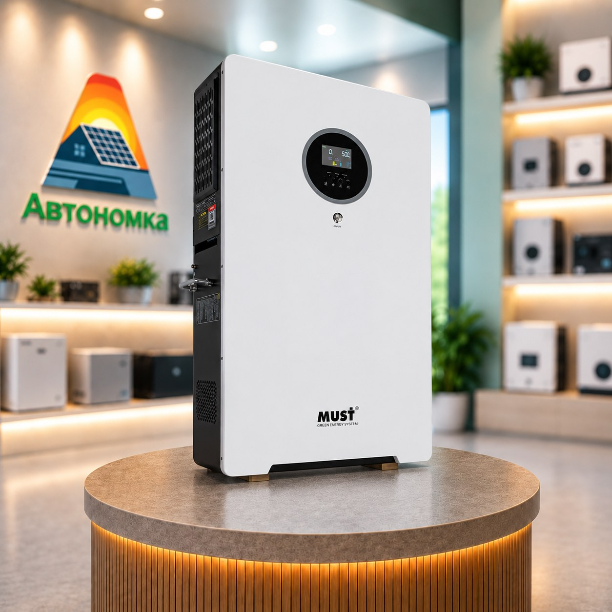

Системи 2 в 1: інвертор і акумулятор в одному корпусі - кому вони підходять
Що таке система зберігання енергії 2 в 1, чим вона відрізняється від окремих інвертора й акумулятора, які в неї переваги та обмеження і для кого це найзручніше рішення для резервного живлення.
Коли людина вперше думає про резервне живлення, зазвичай виникає багато запитань. Який потрібен інвертор? Яку обрати батарею? Чи будуть вони сумісні між собою? Який кабель узяти і як усе це правильно з'єднати?
Саме тому дедалі популярнішими стають системи формату 2 в 1 - готові рішення, у яких інвертор і акумулятор об'єднані в одному корпусі.
Що таке система 2 в 1
Система зберігання енергії 2 в 1 - це пристрій, який поєднує інвертор і літієвий акумулятор в одному блоці. Усередині вже узгоджені всі основні компоненти: інвертор, батарея, система керування BMS і з'єднання між ними.
Для користувача це означає, що не потрібно окремо підбирати інвертор під батарею, перевіряти сумісність за напругою і протоколом зв'язку чи думати про переріз кабелів між ними. Виробник уже зробив це на етапі проєктування.
По суті, це щось середнє між зарядною станцією та повноцінною системою резервного живлення з окремих компонентів.
Як працює така система
Принцип роботи такий самий, як і в класичній схемі з гібридним інвертором і акумулятором:
- поки є електропостачання, техніка живиться від мережі, а акумулятор заряджається;
- коли світло зникає, система автоматично переходить на живлення від батареї;
- після відновлення мережі вона знову перемикається на мережу і поповнює заряд.
Залежно від моделі, до системи 2 в 1 можна підключити й сонячні панелі. Тоді вдень енергія від сонця живитиме навантаження та заряджатиме акумулятор.
Переваги систем 2 в 1
Простота вибору. Не потрібно розбиратися в сумісності інвертора та акумулятора - усе вже підібрано виробником.
Швидкий монтаж. Менше окремих пристроїв і з'єднань, тому підключення займає менше часу.
Компактність. Один корпус займає менше місця, ніж окремо змонтовані інвертор, батарея і кабелі між ними. Такі системи часто встановлюють у квартирах, коридорах, кладових чи невеликих технічних приміщеннях.
Акуратний вигляд. Немає відкритих силових кабелів між інвертором і батареєю, тому система виглядає охайно навіть у житловому приміщенні.
Надійна взаємодія компонентів. Інвертор і BMS акумулятора спроєктовані для спільної роботи, тому заряджання та розряджання батареї узгоджені з самого початку.
Обмеження, про які варто знати
Система 2 в 1 - зручне рішення, але не універсальне.
Потужність і ємність задані заздалегідь. В окремих компонентах можна вільно поєднати потрібний інвертор із потрібною батареєю. У системі 2 в 1 ці параметри вже визначені моделлю.
Можливості розширення залежать від моделі. Деякі системи дозволяють додати зовнішні акумулятори, інші - ні. Це варто уточнити ще до покупки, якщо плануєте збільшувати ємність.
Вага. Акумулятор у корпусі робить пристрій важким, тому для настінного монтажу потрібна надійна стіна та кріплення.
Обслуговування. Якщо одна з частин потребує ремонту, сервісу зазвичай передається вся система, а не окремий компонент.
Система 2 в 1 чи окремі інвертор і акумулятор
Систему 2 в 1 варто розглянути, якщо:
- потрібне резервне живлення для квартири, невеликого будинку чи офісу;
- хочеться готового рішення без складного підбору компонентів;
- важливі компактність і охайний вигляд;
- навантаження відоме і не планується суттєво зростати.
Окремі гібридний інвертор та акумулятор підійдуть краще, якщо:
- потрібна велика потужність або значний запас енергії;
- плануєте поступово розширювати систему;
- хочете самостійно обрати бренд і модель кожного компонента;
- система будується під конкретний проєкт із сонячною електростанцією.
Приклад системи 2 в 1
Прикладом такого рішення є MUST HBP19-5548 VPM - система зберігання електроенергії, яка поєднує інвертор потужністю 5,5 кВт і акумулятор ємністю 5120 Вт·год в одному корпусі. Такий запас енергії дає змогу живити основну побутову техніку під час відключень світла без окремого підбору інвертора, батареї та кабелів.
Висновок
Система 2 в 1 - це спосіб отримати резервне живлення без складних розрахунків і підбору сумісних компонентів. Вона компактна, швидко встановлюється і добре підходить для квартир, невеликих будинків та офісів.
Якщо ж потрібна велика потужність, значна ємність або гнучке розширення в майбутньому, краще обрати систему з окремих компонентів.
Не впевнені, який варіант підійде саме вам? Напишіть нам - менеджери Автономки допоможуть оцінити ваше навантаження і підібрати рішення.